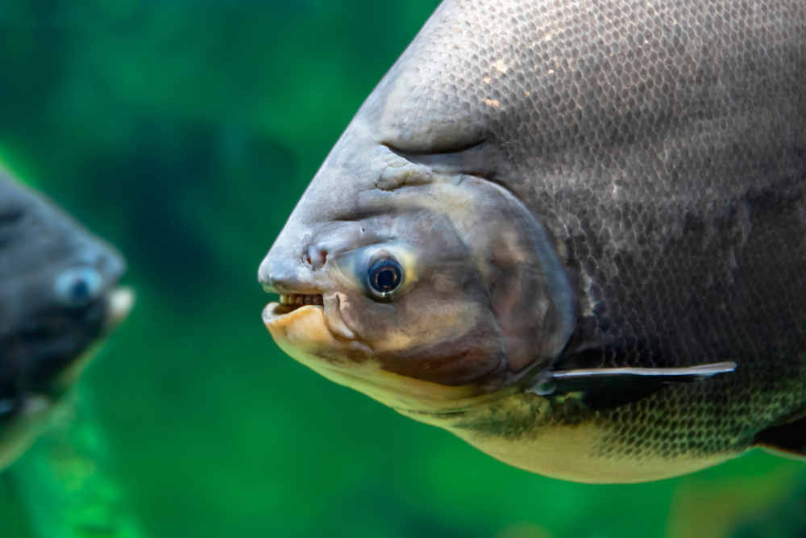
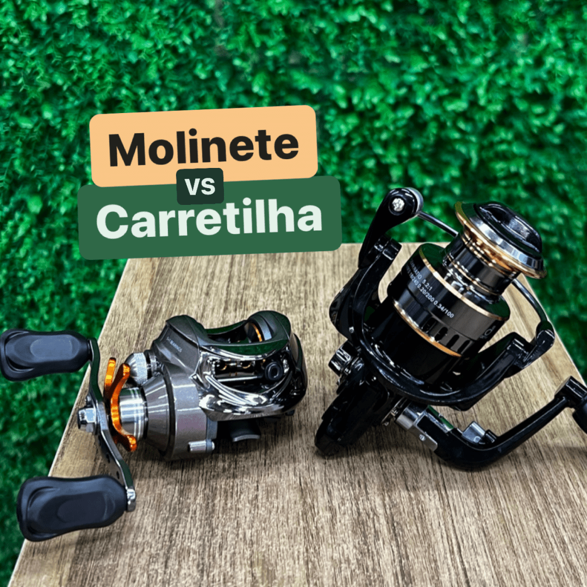
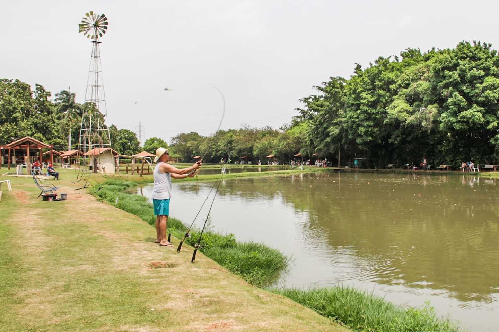

A pesca esportiva ou pesca desportiva é a prática recreativa de pescar, ou seja, a atividade de pescar um
peixe e garantir que ele volte a água sem grandes malefícios, uma das modalidades mais populares da pesca
esportiva é a prática utilizando-se apenas vara de pesca, linha de pesca, chumbada, anzol apropriado e isca
artificial.

Peixes
Tenha uma descricão sobre os principais peixes de São paulo.

Equipamento
Saiba mais sobre cada equipamento para se ter a escolha certa na hora que for pescar.

Pesqueiros Recomendados
Recomendações de pesqueiros confiaveis e familiares para se divertir com sua familia e amigos.